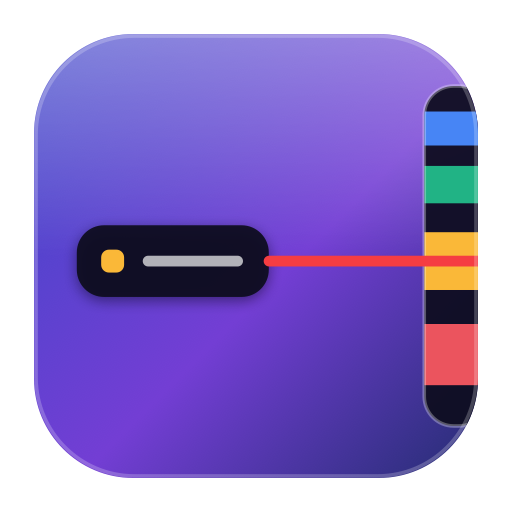
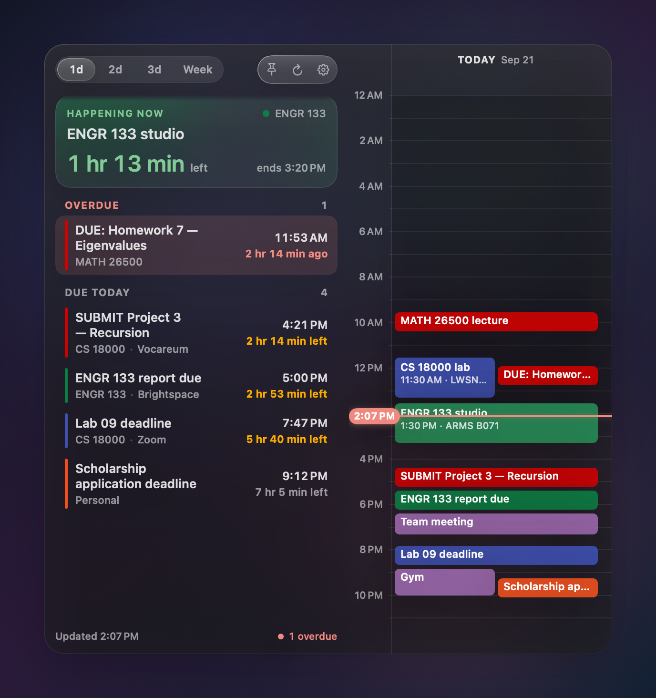
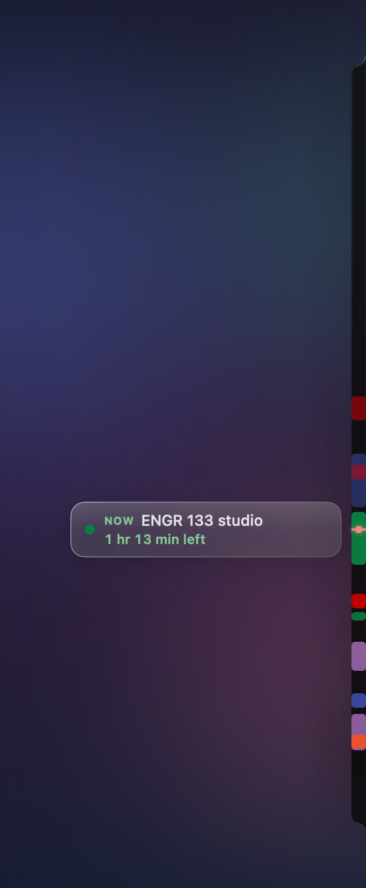
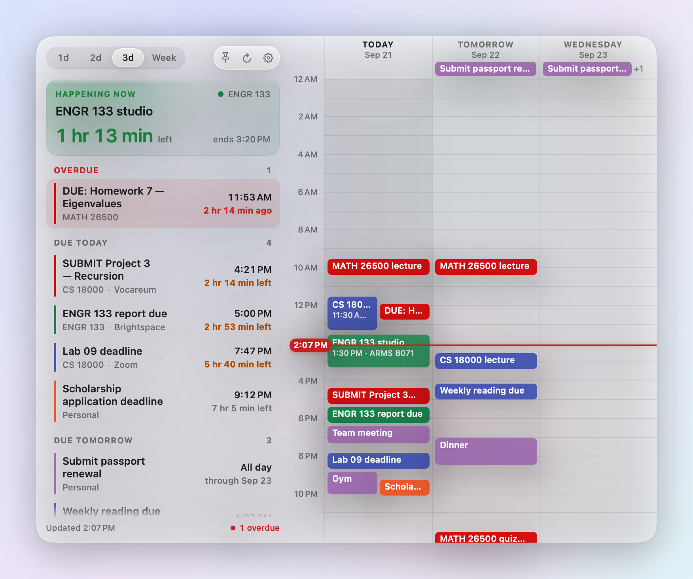
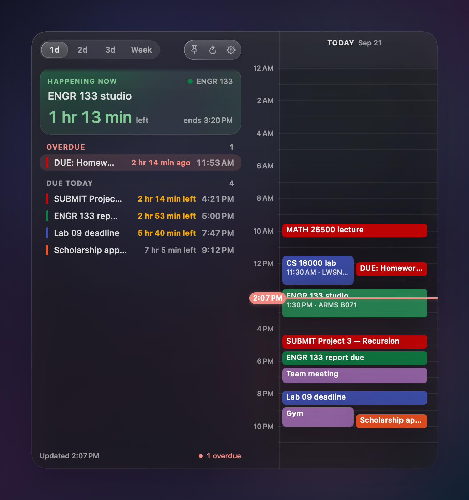
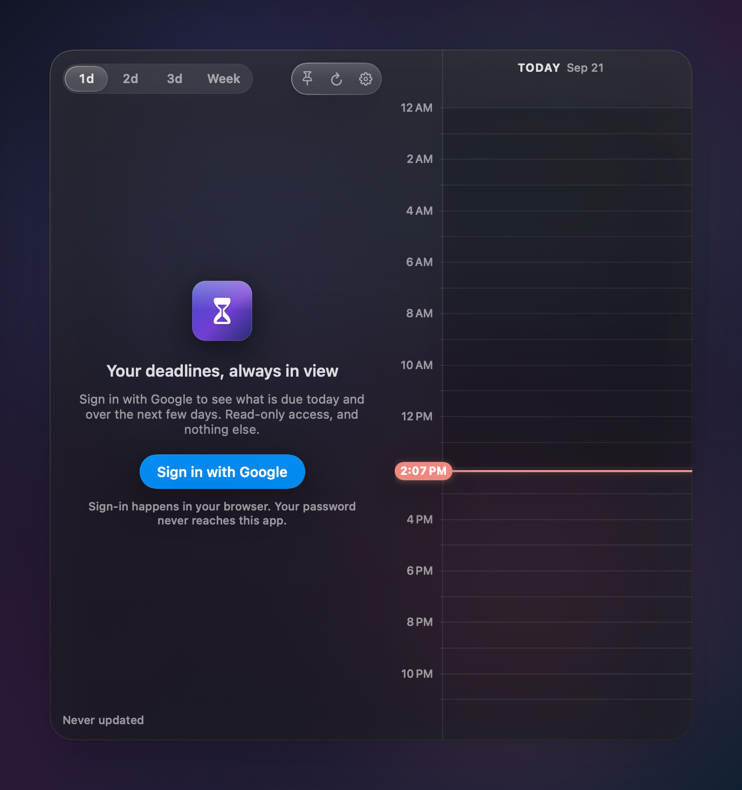

A bar at the edge of your screen for the Google Calendar events you actually have to do something about.
shasum -a 256 DeadlineFloat-1.0.dmg e9d396af3ed0c6b0ffc4d977bf9b1426f5f32ea0ad619c5583499d1744d016ae DeadlineFloat-1.0.dmg a7cd8cb5be1b247f8884b19ffd65fd2b9474af6f72009215a0632fbb10e7b08f DeadlineFloat-1.0.zip

At rest DeadlineFloat is a 12-point sliver down the screen edge: the day as a ruler with every event drawn as long as it lasts, a needle for now, and what is on — or next — floating beside it with a live countdown. Rest the pointer on it, or click the hourglass in the menu bar, and the panel slides out: the tasks on the left, the calendar on the right, one column per day for one, two, three days or the week.
Deadlines are events whose titles start with DUE or SUBMIT, or contain due or deadline — every keyword is editable. Today's schedule shows everything else too, with deadlines tagged; DONE or CANCELLED items stay hidden.
“HAPPENING NOW · 1 hr 13 min left” while you are in something; “DUE NEXT · in 2 hr 14 min” before the next thing. Whole minutes in words, never seconds, flipping exactly on the minute.
Exactly the colour Google reports, per event or per calendar, as a bar beside each row and a glow behind the spotlight. Urgency shows up in the countdown's wording and colour — never by overwriting the colour you chose.
A two-finger swipe marks a deadline done, with a tap from the trackpad. Completed items wait in a drawer above the list — scroll up past the barrier to see them, swipe one back whenever you like.
Twelve points wide until you want it, and it never steals focus from what you are working in; pin it open while you work. One bar per display, on the left or right edge, or drop it down from the menu bar instead. Adjustable text size and opacity, compact rows, and it honours Reduce Transparency and Increase Contrast.
Daylight saving, midnight versus noon, recurring series, multi-day all-day events, duplicates across calendars, offline, and Google's rate limits — all handled and covered by tests.
Lives in the menu bar, no Dock icon. Refreshes every five minutes, on wake from sleep, and whenever the day or time zone changes.
Liquid Glass on macOS 26 and later; a hand-built glass fallback down to macOS 14.




Nothing to configure and no account to create. The whole setup is four steps.
calendar.readonly. No profile, no email, no other service.GET, enforced in code, so the app cannot create, change or delete an event.